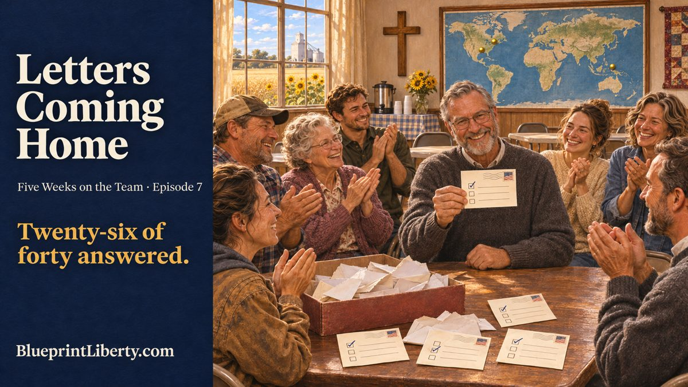

← Runtime Republic · Five Weeks on the Team
Five Weeks on the Team · Episode 7 of 10 · about 7 minutes · Draft under review

It started with a stamp.
Months earlier, the team had begun writing to the people who set their taxes. Each member traced one tax from their own receipts, from the store to the government that collected it, and as far as the public record would let them follow it. Then they wrote a short letter to the officeholder responsible for that tax. Every letter said the same three things. Here is what I paid. Here is where I could follow it, and here is where the trail went cold. Here is the standard I expect of a steward of my money. Every letter also had a three-by-five reply card tucked inside, already stamped and addressed. The card had three boxes to check: I will review this. I will meet with your team. I disagree, and here is why.
For a long time nothing came back. Then, in the same week, eleven cards came back.
Ruth got hers first. It came from a county office, and the "I will meet with your team" box was checked, with a phone number written underneath in blue ink. Maria's came from a state senator's office. It was a form letter, but someone had added a handwritten line at the bottom: "Good question on the fuel tax. I'll have staff look." Gary's came from a federal office, and it checked the box he had least expected: "I disagree, and here is why." Three paragraphs followed. Gary read them aloud at the Sunday meeting, and the team spent forty minutes on them. They didn't agree with the reasons, but they were reasons, in writing, from an office that had answered. The app logged every card the same way it logs a receipt: date received, who sent it, which tax, which box was checked, and a photo of both sides. It marked each officeholder's line on the contacts strip as answered, with the date.
By the end of the month, twenty-six of forty letters had come back. Nine offices offered a meeting. The app tracked the ones that didn't answer too, and it didn't count silence as an answer. It just kept the line open, with the date the letter went out.
Meanwhile, the church teams grew. Pastor Dan had told another pastor across town about Tom and Karen's private team and their Life Goals tab, without names, just the process. That pastor started a team of his own. Then a third church joined, and a fourth. Within a month there were nine church teams across the city. Each one was small, three to six people, and each worked its own budgets and traced its own taxes. They met on Sundays and shared only what members chose to share.
Then a member's cousin in another state started a team at her church. Then a missionary family Dan's church supported, living in the Philippines, asked for a copy. Their taxes looked nothing like Kansas taxes. Most of what they paid was a value-added tax built into the price of almost everything they bought. But the steps were the same: trace the tax, find who collects it, follow it as far as the record allows, and ask the person in charge to answer. Their first reply card came back from a city hall in the Philippines four weeks later. When Dan showed it on the screen, the room broke into applause.
Nobody planned any of it. Each team was governed by the same controls and stayed at its own level, so no one team ever spoke for another. That was the only reason it could grow that fast without falling apart.
Then came the news from the two traffic stops.
Jake's lawyer had gone through the dispatch log line by line, the way the team goes through a bank statement. Two patrol units had been logged near the retirement party for more than an hour before either stop. A note in the log mentioned the party by its address. Watching a party from the street is legal. But the log showed what the officers knew when they stopped Jake: that he had left a party, and that he had missed a turn signal. Nothing more. There was no erratic driving, no smell of alcohol and no slurred words. The stop for the turn signal was lawful. Holding Jake past that reason, to look for something else, was the question. Jake's lawyer put the log next to the timeline in Jake's private repo and sent a letter to the prosecutor.
Two weeks later, the charge against Jake was dismissed.
Dale's case ended differently. His dash camera showed no weaving, and his breath test was below the limit. But Dale had been drinking, and he knew it. He didn't want to gamble on a trial. His lawyer and the prosecutor worked out an agreement. Dale would take a driver safety course and complete a period of good behavior, and if he did, the charge would be dismissed with no conviction on his record. Dale read it twice and said it was an agreement both sides could live with. "I had two beers," he told the team. "I'm not proud of it. But I wasn't weaving, and now everybody knows that, because it's on the record."
The team thought that was the end of it. Jake had other plans.
At the next Sunday meeting, he stood up. Jake rarely stood up to speak. "I'm going to file a case in federal court," he said, "against the officer and the city. I'm not doing it for money. I'm going to ask for one dollar, so the court can say whether what happened was right or wrong. And I'm going to ask the city to do one thing: put its officials on a team with us, the way the county did, and work out a better way to run a traffic stop. A clock tied to the reason. Cameras on from the first minute. Review when the reason doesn't match the video."
Someone asked if he had a lawyer for it. Jake said he would represent himself at first, which any citizen has the right to do for his own case. He would use the app to organize every filing the same way he had organized the criminal case. He had already found the published opinions he needed through the free court records connection. They would tell him what the courts had said before him, and how hard this kind of case can be to win.
"It might not work," Jake said. "Courts don't usually order a city to join a team. But a city can agree to it. And I'm going to ask in writing, in public, where everyone can see the answer."
Then he said one more thing. "I'm also announcing that I'm an exploratory candidate for the Kansas House in 2028."
The room was quiet. Then Dale started laughing, and then everyone was clapping.
"I'm not running against anybody," Jake said when it settled down. "I'm running for a process. I've traced my taxes for a year. I've written letters, and I've had cards come back. I've been arrested for a missed turn signal on an empty road. I don't want to be angry about it. I want to sit on the other side of the reply card and answer the way I'd want to be answered."
The app opened a new card for him on the team dashboard: Exploratory candidate, Kansas House, 2028. Under it were three open items. Verify the filing deadline on the official Secretary of State site. Verify the voter registration and district through VoterView. Write a stewardship letter to himself, as if he already held the office, and answer it before anyone else does.
Jake wrote that letter that night. It was the hardest one he had ever written.
← Episode 6 · Series index · Episode 8 →